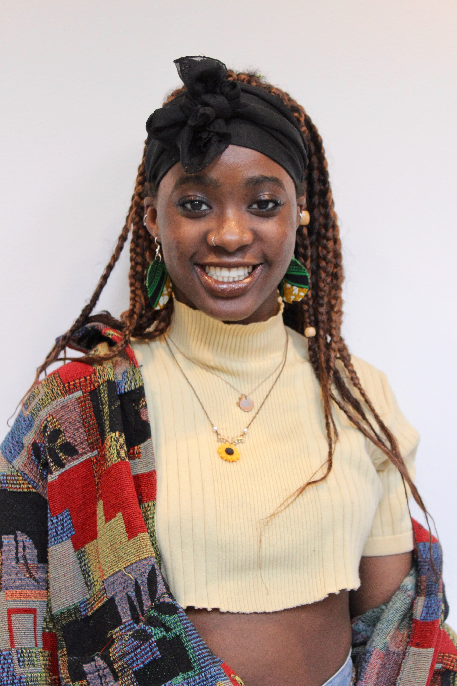
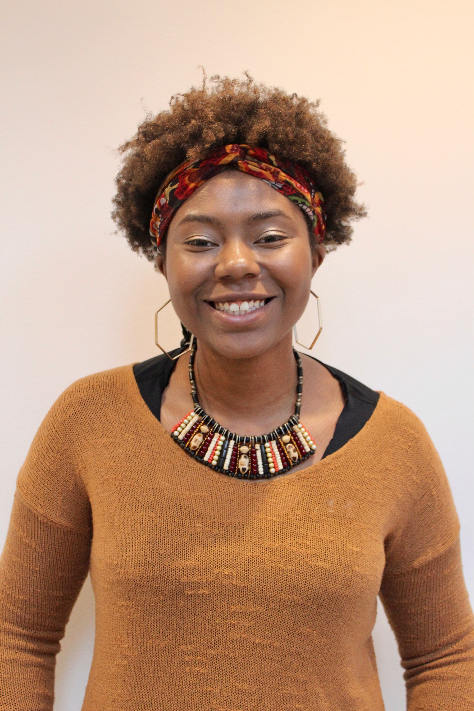
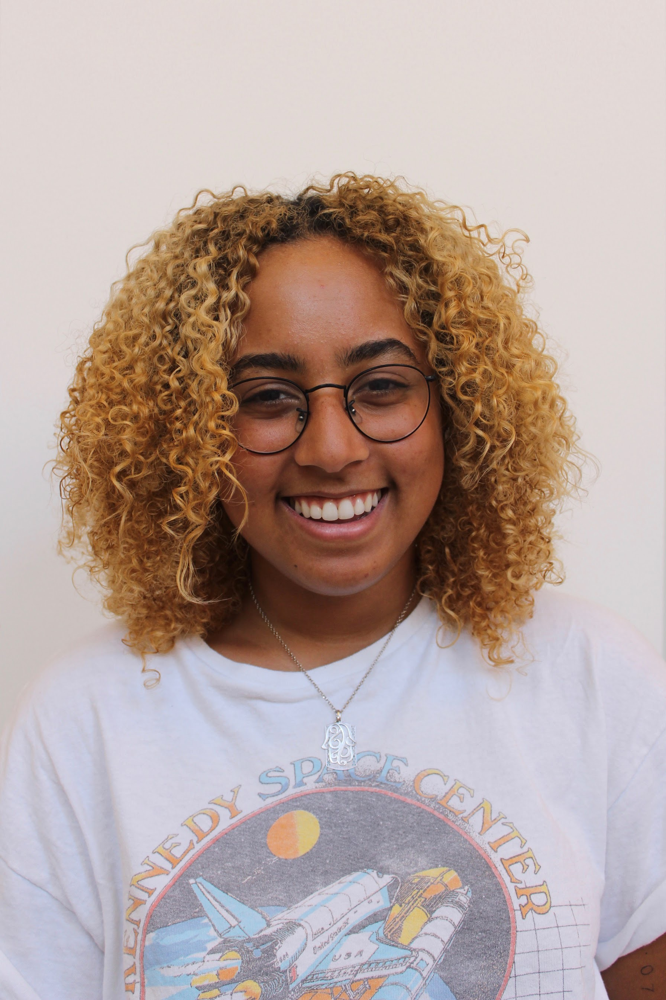
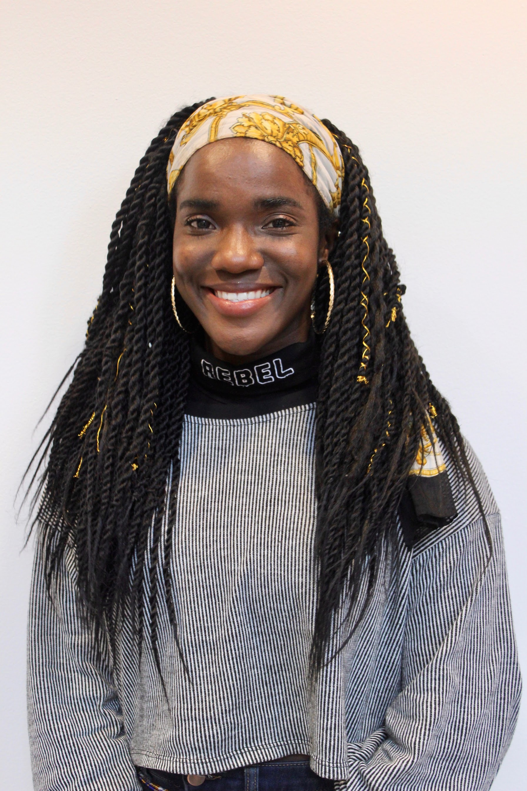

Kalyn Nix is a Sophomore in Whitman.
She is majoring in Molecular Biology with a certification in Global Health Policy.
Kalyn is also involved in club volleyball, fundraiser planning for the Be Positive Childhood Cancer Foundation,
and is excited be an RCA in Whitman next year.
Gabriella Carter - Vice President
Gabriella is a Freshman in Mathey College, majoring in Sociology. On campus, she is involved in Woke Wednesdays,
Varsity Cheerleading, the First-Generation/Low Income Council, Dorobucci, the Black Organization for
Leadership Development, and pre-Law Society.

Faith Iloka - Treasurer
Faith Iloka is a Sophomore in Wilson College. She is an African American Studies concentrator with
prospective certificates in theatre and music. When Faith is not in class, you can catch her somewhere
in Frist or on a stage acting, modeling, singing or dancing! She is currently the president of DoroBucci
(Princeton’s premier African dance group), Treasurer for the Black Student Union, and a PASA member.

Destiny Salter - Events Chair
Destiny Salter is a Junior in the African-American Studies and Creative Writing departments.
She is super excited to continue to serve on the board and design new and fun events for the black community.

Silma Berrada - Director of Marketing
Silma Berrada is a Freshman in Wilson College from Mequon, Wisconsin. She is a prospective English major
with certificates in visual arts and theater. Silma is a photographer, cheerleader, news reporter for
the Princetonian, and on the board for the Sankofa African Fashion Show.
Destiny Martins - Secretary
Destiny Martins is a Sophomore in Rocky College from Springfield, New Jersey.
Majoring in Ecology and Evolutionary Biology, she hopes to receive certificates in African
American Studies and Global Health Policy. In addition to serving as Secretary on the
BSU Exec Board, Destiny is a Mentor with the Princeton University Mentorship Program and a member of Big Sibs.

Frelicia Tucker - Director of Outreach
Frelicia Tucker is first year student from Aiken, South Carolina with interests in either
Computer Science or African American Studies. When she’s not napping in the Women’s
Center or getting help during COS TA office hours, you can find her in the dance studio
with either BodyHype or Dorobucci! As a new member on the BSU Board, Frelicia is
excited to work to strengthen the black community on campus and connect with amazing
students through the process.